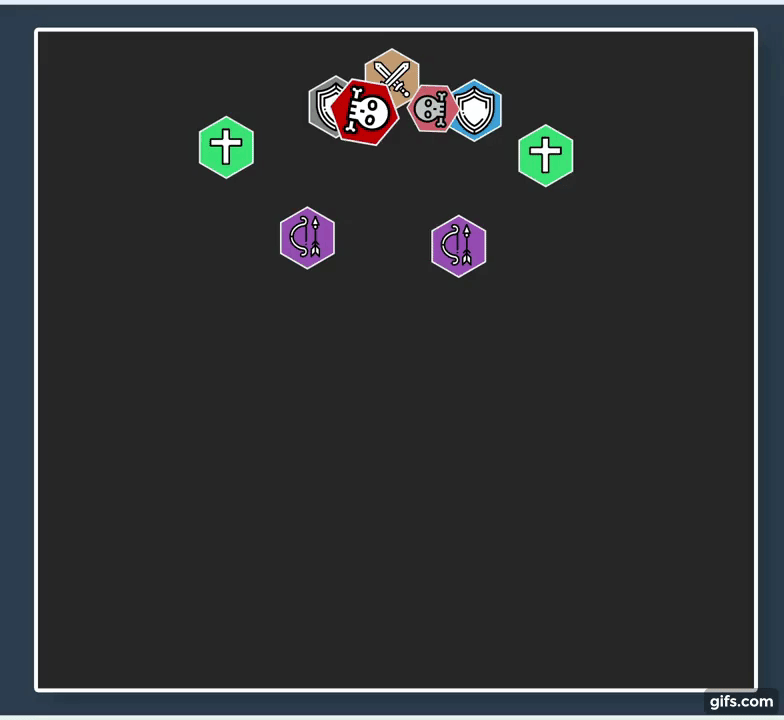
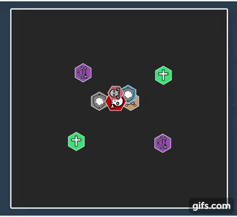
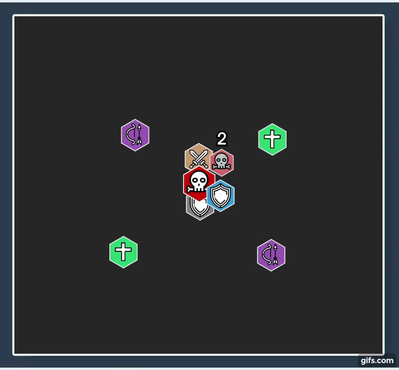

<< Back
TL;DR
Boss
- 1 phase-es fight amit három részre tagol a három petje
Boss
- A boss maga nem sokat tesz, de azt végig a fight során
- A Huntsman's Bond buffnak köszönhetően a boss HP-ja shared a petjeivel
- 45s-enként castolja, 3s-ig
-
3 targetet kiválaszt
- Marker a fejük felett
- Bossból induló nyíl az irányukban
- A mechanika követi a mozgásukat - nem tudják dodge-olni
-
A cast befejeztével széles vonalban sebez mindenkit aki a projectile útjában áll
- 15.6k Physical azonnal
- 30s-es DoT: 6.3k Shadow / 2s
- Csak a három kijelölt kaphatja meg a dmg-et
- Mindenki spreadel a figh teljes hossza alatt
- A kijelöltek csak anynit mozognak, hogy a nagyobb csoportok útjából kimozduljanak, aztán megállnak
- Mindenki figyel arra, hogy ne álljon a piros nyíl útjában
- Melee Mivel a boss-ból indul mindhárom nyíl, nehezebb dodgeolni, egy oldalt maradnak
- Random targetel egy playert
- Cone-ban sebez a target irányában 12.5k Phyiscal-t
- A Sinseeker miatt már egyébként is szóródunk, ez csak megersőíti ezt
- Healer a dmg-et ki kell healelni, unavoidable

- A fight elejétől jelen van, sorban első pet a háromból
- A Tank ráhúzza az addot a bossra
- A pet feljelöl egy játékost, 6 yardos piros whirly jelenik meg körülötte
- 6s elteltével a targetre charge-ol
- 54.5k Phyiscal dmg oszt szét 6 yardos sugarú körben
-
A soakoló playerekre egy Vicious Wound debuffot tesz
- 6s-es DoT: 9.4k Phyiscal / 3s
- Csak annyi ember sokaolja a sebzést, amennyinek muszáj
- A kitargetelt playernek ki kell futnia a raidből
- Minimális mennyiségű (~4) player soakolja a dmg-et a Vicious Wound miatt
- Immunityvel solozható, amit be kell jelenteni előre
- Az a player nem soakol, aki más mechanikát intéz éppen vagy akin ketyeg még a Vicious Wound
-
10-20s-enként castolja a boss a pet tankjára
- Init: 25k Phyiscal dmg
- 30s-es DoT: 9.4k Phyiscal / 3s
- A DoT bleeding, ha tudjuk eltávolítjuk
- ~2 stack magasságában, vagy ahogy a tank bírja tank-swappelni kell
- Margore halálával a map nyugati oldalán szabadul el
- A Tank a fal mellett tartja a petet
- Tank A petes tank minden cast előtt kimozgatja a petet a map szélére
- A tankra üti, 31.2k Shadow init dmg és létrehoz Soul-t
-
A Soul-nak annyi %HP-ja lesz amennyi a tanknak volt az init dmg után
- Tank Mitigálja az ütést
- Healer Toppolja a tankot az ütés előtt
-
A soul a boss irányába indul, azt elérve Devour Soul buffot kap a boss
- 200% dmg done increase a bosson
- Tank A boss-t kite-oljuk, hogy ne érjen be a Soul
-
Amíg a soul él aktív az Unstable Soul
- 3.1k Shadow / 2s raid-wide sebzés amíg a soul él
- Nem élvez prioritást, nem a raidet toppoljuk, hanem a soult
-
A soul eltűnik, ha a healerek fel tudják healelni 100%-ra
- Healer Az addot azonnal fel kell healelni 100%-ra

- Percenként egyszer a Rip Soul helyett castolja a pet
- Ugyanúgy kivisszük a falhoz a petet
-
A pet létrehoz két Shade-et
- A boss két oldalán spawnolnak
- Nevetségesen sok HP-juk van, nem tankolhatóak
-
Folyamatosan Deathly Roar-t castolnak
- Nem szakítható cast
- Raid-wide 10.3k Shadow dmg-et oszt
- Mindenkire egy 20s-es DoT-ot tesz: 3.8k Shadow / 2s
-
CC-zhetőek, minden CC-ben töltött 2s +1 Destabilize stack
- Minden stack 100% dmg taken incr. a shade-en
- ~30 stack magasságában könnyen nuke-oljuk őket
- Amíg nincs meg a 30 stack, nem DoT-oljuk fel őket
- Az energyjük nő, ~70s alatt 100-ra tölve immunisak lesznek a CC-re (Unyielding)
- Az utolsó pet, a ketrece az észak-nyugati sarokban, halálával 10% HP-n a boss
- A Tank ráhúzza az addot a bossra
-
Stackkelő debuff, minden stack
- Lassítja petet és növeli a Phyiscal sebzését 50%-kal
-
Amikor a pet mozog:
- 1 stackket eldob
- 3.8k Nature raid-wide dmg-et oszt
- Healer Heal CD-kre van szükség a mozgáshoz
-
Amikor az összes stackket eldobta, rácharge-ol a tankjára
- Ismeretlen jelenség, lehet, hogy nincs is
- Ha van, akkor célszerű 1 stacket mindig a peten tartani
-
Tank A pet tank amíg bírja egyhelyben tartja a petet
- Tűréshatáron túl a boss körül mozgatja

- Pár non-tank playert kiválaszt a pet és egy 8s-es debuffot tesz rájuk
-
Amikor lejár egy Stone Shards patchet hagy maga után - ki kell vinni
- Ez egy barna patch, ami nem tűnik el
- 2.5k Nature dmage / 1.5s és 25% speed reduction annak aki benne áll
- Minden másodpercben 5%-kal lasabban tudnak mozogni - azonnal el kell indulni